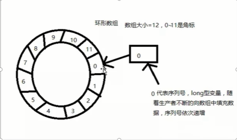
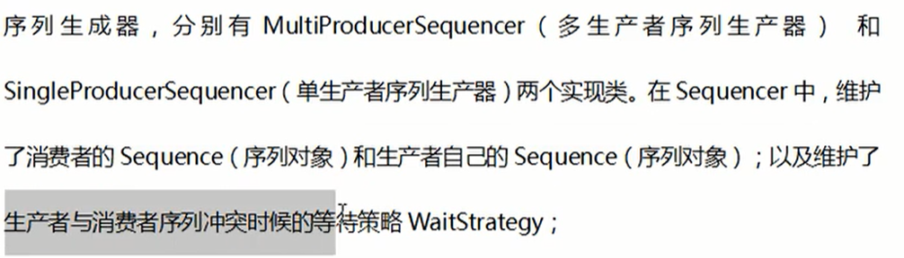
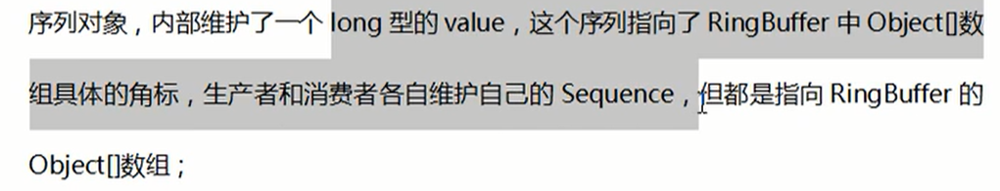

一：简介
解决并发交易锁
线程间消息传递库
Java中的队列：
ArrayBlockingQueue：
基于数组，通过加锁的方式来保证多线程安全。
LinkedBlockingQueue：
基于链表，通过加锁来保证多线程安全
ConcurrentLinkedQueue：
基于链表，通过CAS保证安全，不加锁
LinkedTransferQueue：与ConcurrentLinkedQueue相同
特点：
加锁实现的队列，有界（可以设置队列的大小）有锁，性能降低
CAS的队列，无界，如果生产者生产过快，消费者没有及时消费，导致内存溢出。
故：disruptor实现类有界无锁的队列，主要使用了环形数组RingBuffer，效率很高。
环形数组，无锁设计，位运算
二：Disruptor结构
环形数组RingBuffer

与数组索引不同，序列号的下标不断增加，超过了12依然可以放，直到long
其大部分实现都是使用位运算来实现的，效率很高，定位快，在Disruptor中数组内的元素并不会被删除，而是新数据来覆盖原有数据。
三：使用
添加maven依赖
<!-- https://mvnrepository.com/artifact/com.lmax/disruptor -->
<dependency>
<groupId>com.lmax</groupId>
<artifactId>disruptor</artifactId>
<version>3.4.2</version>
</dependency>
声明Event类来包含需要传递的事件（数据
public class LongEvent {
private Long value;
public Long getValue() {
return value;
}
public void setValue(Long value) {
this.value = value;
}
}
使用EventFactory来实例化Event对象
public class LongEventFactory implements EventFactory<LongEvent>{
@Override
public LongEvent newInstance() {
return new LongEvent();
}
}
声明消费者事件（数据）处理器
/**
* 消费者，事件监听
* @author Administrator
*
*/
public class LongEventHandler implements EventHandler<LongEvent>{
@Override
public void onEvent(LongEvent longEvent, long l, boolean b) throws Exception {
//消费，数据处理
System.out.println(longEvent.getValue());
}
}
生产者发送事件
public class LongEventProducer {
private final RingBuffer<LongEvent> ringBuffer;
public LongEventProducer(RingBuffer<LongEvent> ringBuffer) {
this.ringBuffer=ringBuffer;
}
public void onData(ByteBuffer bb) {
//可以把ringBuffer看做一个事件队列，那么next就是得到下面一个事件槽
long sequence=ringBuffer.next();
try {
//用上面的索引取出一个空的事件用于填充
LongEvent l=ringBuffer.get(sequence);
l.setValue(bb.getLong(0));
}catch (Exception e) {
}finally {
ringBuffer.publish(sequence);
}
}
}
测试验证
public class LongEventTest {
public static void main(String[] args) {
ExecutorService executor=Executors.newCachedThreadPool();
LongEventFactory eventFactory=new LongEventFactory();
//必须2的N次方
int ringBufferSize = 1024*1024;
/**
//BlockingWaitStrategy 是最低效的策略，但其对CPU的消耗最小并且在各种不同部署环境中能提供更加一致的性能表现
WaitStrategy BLOCKING_WAIT = new BlockingWaitStrategy();
//SleepingWaitStrategy 的性能表现跟BlockingWaitStrategy差不多，对CPU的消耗也类似，但其对生产者线程的影响最小，适合用于异步日志类似的场景
WaitStrategy SLEEPING_WAIT = new SleepingWaitStrategy();
//YieldingWaitStrategy 的性能是最好的，适合用于低延迟的系统。在要求极高性能且事件处理线数小于CPU逻辑核心数的场景中，推荐使用此策略；例如，CPU开启超线程的特性
WaitStrategy YIELDING_WAIT = new YieldingWaitStrategy();
*/
Disruptor<LongEvent> dis=new Disruptor<>(eventFactory, ringBufferSize, executor, ProducerType.SINGLE, new YieldingWaitStrategy());
dis.handleEventsWith(new LongEventHandler());
dis.start();
RingBuffer<LongEvent> ringBuffer=dis.getRingBuffer();
LongEventProducer producer=new LongEventProducer(ringBuffer);
//LongEventProducerWithTranslator producer = new LongEventProducerWithTranslator(ringBuffer);
ByteBuffer bb=ByteBuffer.allocate(8);
for (int i = 0; i < 100; i++) {
bb.putLong(0,i);
producer.onData(bb);
}
dis.shutdown();
executor.shutdown();
}
}
EventProducerWithTranslator实现方式：
public class LongEventProducerWithTranslator {
//一个translator可以看做一个事件初始化器，publicEvent方法会调用它
//填充Event
private static final EventTranslatorOneArg<LongEvent, ByteBuffer> TRANSLATOR=
new EventTranslatorOneArg<LongEvent, ByteBuffer>() {
@Override
public void translateTo(LongEvent event, long sequence, ByteBuffer buffer) {
event.setValue(buffer.getLong(0));
}
};
private final RingBuffer<LongEvent> ringBuffer;
public LongEventProducerWithTranslator(RingBuffer<LongEvent> ringBuffer) {
this.ringBuffer=ringBuffer;
}
public void onData(ByteBuffer buffer) {
ringBuffer.publishEvent(TRANSLATOR,buffer);
}
}
四：主要类分析
Disruptor类
Disruptor的入口类，主要封装了环形队列RingBuffer，消费者集合ConsumerRepository的引用，主要提供了获取环形队列，添加消费者，生产者向RingBuffer中添加事件（即生产数据）
RingBuffer类
底层封装了Object[]数组，初始化时使用Event事件对数组进行填充
还维护了序号生成器的实现
Sequencer类

Sequence

WaitStrategy
决定一个消费者如何等待生产者将Event置入Disruptor，
主要策略有
BlockingWaitStrategy：
最低效的策略，但是内存小
SleepWaitStrategy：
YieldWaitStrategy：
性能最好，要求极高性能，且事件处理线程数小于CPU逻辑核心的场景下，推荐使用此策略
无锁实现
Event
EventProcessor
EventHandler
事件处理器，
五：生产和消费
当Disruptor启动时
生产者的生产的多，消费者没来得及消费，此时再生产会对消费者所在的位置进行判断，如果消费者没有消费，则生产者暂停生产